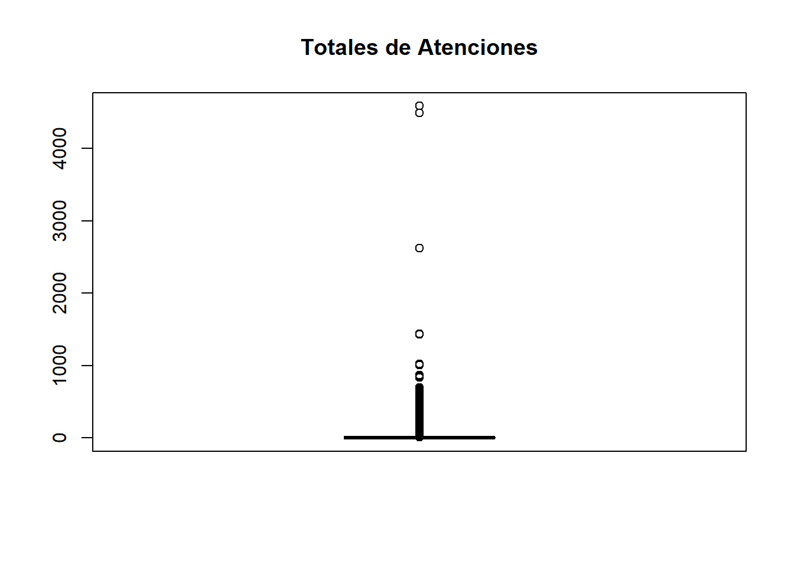

Capitulo 3 Analisis Exploratorio
En este capítulo se establece el directorio donde se encuentra en conjunto de datos, se hace la lectura de los datos, se visualiza una muestra pequeña de registros, se identifican valores nulos, valores atípicos y se identifican las variables cuantitativas y cualitativas.
3.1 Se declara directorio manejo de funciones
## [1] "Directorio No Existe:"
## [1] "Librerias Cargadas"3.3 Lectura de conjunto de datos
AtenUrgencia <- read_delim("AtencionesUrgencia2023.csv",
delim = ";", escape_double = FALSE, trim_ws = TRUE,locale = locale(encoding = "Latin1"))
AtenUrgencia## # A tibble: 8,899,080 × 21
## IdEstablecimiento NEstablecimiento IdCausa GlosaCausa Total Menores_1 De_1_a_4 De_5_a_14 De_15_a_64
## <chr> <chr> <dbl> <chr> <dbl> <dbl> <dbl> <dbl> <dbl>
## 1 07-961 SUR HIJUELAS 17 Otras cau… 0 0 0 0 0
## 2 16-959 SUR Río Claro 17 Otras cau… 0 0 0 0 0
## 3 15-953 SUR Olivar 17 Otras cau… 0 0 0 0 0
## 4 03-932 SUR Socaire 17 Otras cau… 0 0 0 0 0
## 5 14-831 SAPU La Florida 17 Otras cau… 0 0 0 0 0
## 6 05-805 SAR Tierras Blan… 17 Otras cau… 1 0 0 0 1
## 7 10-891 SAPU Marcela Jaq… 17 Otras cau… 0 0 0 0 0
## 8 05-819 SAR Raúl Silva H… 17 Otras cau… 0 0 0 0 0
## 9 19-101 Hospital de Tomé 17 Otras cau… 0 0 0 0 0
## 10 11-809 SAPU Dra. Ana Ma… 17 Otras cau… 0 0 0 0 0
## # ℹ 8,899,070 more rows
## # ℹ 12 more variables: De_65_y_mas <dbl>, fecha <chr>, semana <dbl>, GLOSATIPOESTABLECIMIENTO <chr>,
## # GLOSATIPOATENCION <chr>, GlosaTipoCampana <chr>, CodigoRegion <dbl>, NombreRegion <chr>,
## # CodigoDependencia <dbl>, NombreDependencia <chr>, CodigoComuna <dbl>, NombreComuna <chr>3.3.1 Tabla de los 10 primeros registros del dataset
| IdEstablecimiento | NEstablecimiento | IdCausa | GlosaCausa | Total | Menores_1 | De_1_a_4 | De_5_a_14 | De_15_a_64 | De_65_y_mas | fecha | semana | GLOSATIPOESTABLECIMIENTO | GLOSATIPOATENCION | GlosaTipoCampana | CodigoRegion | NombreRegion | CodigoDependencia | NombreDependencia | CodigoComuna | NombreComuna |
|---|---|---|---|---|---|---|---|---|---|---|---|---|---|---|---|---|---|---|---|---|
| 07-961 | SUR HIJUELAS | 17 | Otras causas circulatorias | 0 | 0 | 0 | 0 | 0 | 0 | 18/06/2023 | 25 | SUR | Indiferenciado | Ninguna | 5 | De Valparaíso | 7 | Viña Del Mar Quillota | 5503 | Hijuelas |
| 16-959 | SUR Río Claro | 17 | Otras causas circulatorias | 0 | 0 | 0 | 0 | 0 | 0 | 18/06/2023 | 25 | SUR | Indiferenciado | Ninguna | 7 | Del Maule | 16 | Del Maule | 7108 | Río Claro |
| 15-953 | SUR Olivar | 17 | Otras causas circulatorias | 0 | 0 | 0 | 0 | 0 | 0 | 18/06/2023 | 25 | SUR | Indiferenciado | Ninguna | 6 | Del Libertador B. O’Higgins | 15 | Libertador B. O’Higgins | 6111 | Olivar |
| 03-932 | SUR Socaire | 17 | Otras causas circulatorias | 0 | 0 | 0 | 0 | 0 | 0 | 18/06/2023 | 25 | SUR | Indiferenciado | Ninguna | 2 | De Antofagasta | 3 | Antofagasta | 2203 | San Pedro de Atacama |
| 14-831 | SAPU La Florida | 17 | Otras causas circulatorias | 0 | 0 | 0 | 0 | 0 | 0 | 18/06/2023 | 25 | SAPU | Indiferenciado | Ninguna | 13 | Metropolitana de Santiago | 14 | Metropolitano Suroriente | 13110 | La Florida |
| 05-805 | SAR Tierras Blancas | 17 | Otras causas circulatorias | 1 | 0 | 0 | 0 | 1 | 0 | 18/06/2023 | 25 | SAR | Indiferenciado | Ninguna | 4 | De Coquimbo | 5 | Coquimbo | 4102 | Coquimbo |
| 10-891 | SAPU Marcela Jaques Vargas | 17 | Otras causas circulatorias | 0 | 0 | 0 | 0 | 0 | 0 | 18/06/2023 | 25 | SAPU | Indiferenciado | Ninguna | 13 | Metropolitana de Santiago | 10 | Metropolitano Occidente | 13601 | Talagante |
| 05-819 | SAR Raúl Silva Henríquez | 17 | Otras causas circulatorias | 0 | 0 | 0 | 0 | 0 | 0 | 18/06/2023 | 25 | SAR | Indiferenciado | Ninguna | 4 | De Coquimbo | 5 | Coquimbo | 4101 | La Serena |
| 19-101 | Hospital de Tomé | 17 | Otras causas circulatorias | 0 | 0 | 0 | 0 | 0 | 0 | 18/06/2023 | 25 | Hospital | Indiferenciado | Ninguna | 8 | Del Bíobío | 19 | Talcahuano | 8111 | Tomé |
| 11-809 | SAPU Dra. Ana María Juricic | 17 | Otras causas circulatorias | 0 | 0 | 0 | 0 | 0 | 0 | 18/06/2023 | 25 | SAPU | Indiferenciado | Ninguna | 13 | Metropolitana de Santiago | 11 | Metropolitano Central | 13119 | Maipú |
3.3.2 Obtencion de tipos de variables
3.3.2.1 Listado variables categoricas
#obtener el listado de las variables categoricas
listadoCategorico <- variables_categoricas(AtenUrgencia)
for (tipo_columna in listadoCategorico )
{
tipovariable=strsplit(tipo_columna[[1]], " ")[[1]][1]
print(tipovariable)
}## [1] "IdEstablecimiento"
## [1] "NEstablecimiento"
## [1] "GlosaCausa"
## [1] "fecha"
## [1] "GLOSATIPOESTABLECIMIENTO"
## [1] "GLOSATIPOATENCION"
## [1] "GlosaTipoCampana"
## [1] "NombreRegion"
## [1] "NombreDependencia"
## [1] "NombreComuna"3.3.2.2 Listado variables continuas y discretas
#obtnencion de variables numericas
listadoNumerico <- variables_numericas(AtenUrgencia)
for (tipo_columna in listadoNumerico )
{
tipovariable=strsplit(tipo_columna[[1]], " ")[[1]][1]
print(tipovariable)
}## [1] "IdCausa"
## [1] "Total"
## [1] "Menores_1"
## [1] "De_1_a_4"
## [1] "De_5_a_14"
## [1] "De_15_a_64"
## [1] "De_65_y_mas"
## [1] "semana"
## [1] "CodigoRegion"
## [1] "CodigoDependencia"
## [1] "CodigoComuna"3.3.3 Verificar valores nulos NA en dataset
## [1] 0#remplazo de variables continuas y discretas
if (valoresNulos>0)
{
AtenUrgencia[AtenUrgencia$Total == "NA"] <- 0
AtenUrgencia[AtenUrgencia$Menores_1 == "NA"] <- 0
AtenUrgencia[AtenUrgencia$De_1_a_4 == "NA"] <- 0
AtenUrgencia[AtenUrgencia$De_5_a_14 == "NA"] <- 0
AtenUrgencia[AtenUrgencia$De_15_a_64 == "NA"] <- 0
AtenUrgencia[AtenUrgencia$De_65_y_mas == "NA"] <- 0
}3.3.4 Verificar valores fuera de rango o outlier
Se visualizan los valores atípicos o fuera de rango, se decide no reemplazar estos valores, dada la naturaleza del conjunto de datos y del proceso de registro de las atenciones de urgencia.
#boxplot.stats(AtenUrgencia$Total)
#boxplot(AtenUrgencia$Total, col="skyblue", frame.plot=F)
boxplot(AtenUrgencia$Total,
main = "Totales de Atenciones",
boxwex = 0.5,col="#006FB3")